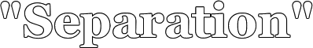

© by Nick McClellan
but I heard you...
transfixed, sitting
suspended
your fingers beating
our song on your piano
you look so fine,
and my heart follows
...you promised me
I.
Yesterday the world changed
The sun waned and the dead rose
My light blotted out with oily dread
The sky swallowed by my bare ceiling
Thursday, my heart burst
popped, shattered, and splashed
Dropped. And drooling
ringing chaos, because
I could not have you...
Once my fingers danced on flannel
With grace and sweet intention
My heart leapt when we touched
Our palms sliding
Darting between fingers
Wrestling with your thumb
Rolling over your wrist
My fingers drag
I fell
II.
In dark places
I wait, awake
Dead dreams rise through me
float above me
Laugh, assault, and brace my arms
Warming them. Holding them.
Like you did
Choked by cold truth
my name on your lips
my thought, Maybe.
I wish I didn't know
Listen to your hands
and hair
waffle, toss and tumble
make over your pieces
touching your head, chest and arms
right here,
and rugged, assured face
Beautiful, and I kissed it.
Beneath your ceiling sky
III.
Shining above me, I see them
my seven stars of chaos
I lay agonizing a statue
Warming now stone dead fingers
Your last lie with me
The sands billow off and fall
I slip away, creased
waiting for the cut
fuming with dim promises
Under a shifted, midnight sky
Glances flash between pillows
So content, I take your eyes
remember them
You squeeze my hand and I'm broken
handing you a peace
Stranger
Overwhelming, it swells
shatter you
A warmth woven into space
IV.
Awake, in anxious dread
your heaving chest rises on my horizon
sigh and stare at a window sill
compromise with your hand, my prize
Held it close, this part of you
I need you, can you see me?
And the midday light
wince my eyes, close your palm
I sleep
But alive! So alive
You cradle me in wings of cotton
I flip to enfold you
Covered in me. Drenched in you.
Beneath a ceiling fan
Our legs succumb
This, our point of contention
My place impregnable. Not to you
I promised
I will never leave you
But you're gone now
Watching me from shadows
Whispering in my ear
Close your eyes
and listen...
I never loved you